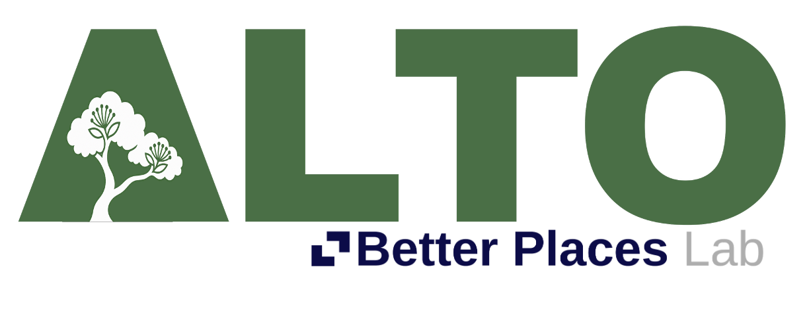

Tap a parcel to select it · Esc to cancel
Tap a parcel to select it · Esc to cancel

An open record of Auckland’s trees from the Better Places Lab: what each source recorded, what the 2024 LiDAR survey measured, and what ALTO estimates, each with its method.
Data releaseTool 0.2.0What changed
ALTO brings Auckland’s tree records, the 2024 LiDAR survey (an airborne laser survey), earlier surveys and aerial imagery together. For each tree it estimates size, growth form, root space and yearly benefits, and links earlier canopy records where it can. Select a tree to see its source data, its measurements and the estimates, each marked as an estimate.
Service totals exclude nominal crownless-tree scenarios.
Tree panel: size, survey history, benefits and identifiers. Tree page: every source record, measurement, method, photo and a citation. Area, in the left panel: totals for Auckland, a local board, the map view or a property. Bulk data and research partnerships: Better Places Lab.
The methods explain how ALTO finds trees, estimates their dimensions and benefits, links surveys through time, and tests its predictions. They include the assumptions, test results and gaps still to resolve. Model code and documentation.
Crowns are segmented from the 2024 LiDAR survey and aerial imagery (release 5 onwards). Earlier detections, dimensions and ground visits stay in each tree’s full record.
Council notable-tree positions that are not yet verified stay separate from automatic crown links. A crown outline can still split one tree or join several. Methods for release 5.2.
LiDAR-detected trees are labelled by how strong the evidence is: very likely, probable or possible. A possible tree may be a hedge or a large shrub. The “Include possible and unverified detections” switch under Filters › Link status hides them.
The current map covers metropolitan Auckland. Earlier canopy records depend on historic survey coverage and successful matching. Records outside the 2024 survey’s crowns keep their earlier measurements. Unmatched records remain available for review. Trunk diameter and roots are estimated; field measurements would improve both. Species names come only from source records. Where none exists, ALTO estimates the growth form (evergreen broadleaf, deciduous broadleaf, conifer, or palm, cabbage tree or tree fern) and marks it as an estimate.
Developed by the Better Places Lab (Dr Timothy F. Welch), Te Pare School of Architecture and Planning, Waipapa Taumata Rau, University of Auckland. Built on Auckland Council open data, LINZ LiDAR and imagery, and i-Tree species references.
Cite the map: Welch, T. F. (2026). ALTO: Aotearoa Long-term Tree Observatory. Better Places Lab, University of Auckland.
Property boundaries and the inferred land type (the Land type filter and colours, and property summaries) come from LINZ NZ Primary Parcels, Auckland Council Unitary Plan zones and designations and park extents, and DOC Public Conservation Land, all CC BY 4.0, and from OpenStreetMap golf courses, island roads and addresses, © OpenStreetMap contributors, ODbL. Land type is inferred from these records, not from ownership records.